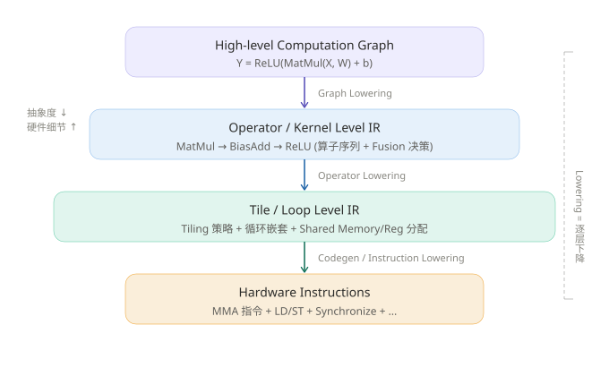
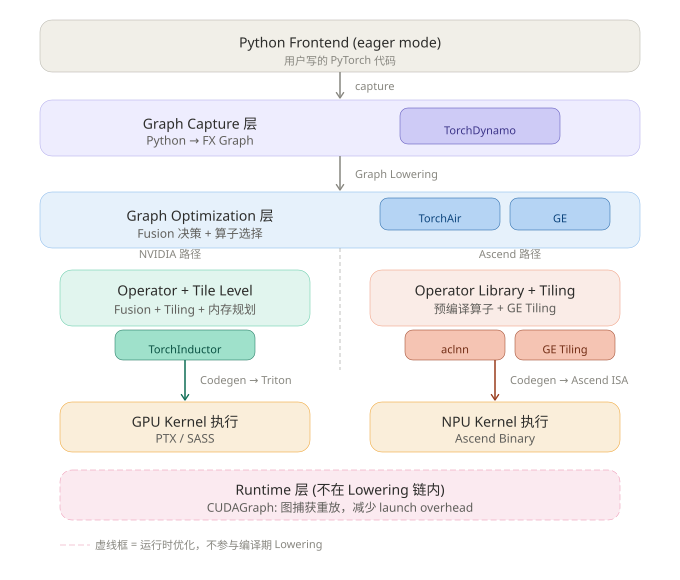

PyTorch 编译栈与 Lowering 层次映射¶
场景引入¶
你一定见过这几个名字：Dynamo、Inductor、CUDAGraph、TorchAir、GE、aclnn……它们在 PyTorch 的编译和推理流程中各司其职，但互相之间的关系是什么？谁在做 2026-06-23_lowering？谁只是个运行时优化？
这篇讲解把 PyTorch 编译栈的组件，精确映射到 2026-06-23_lowering 的三层模型上，让你一眼看清每个组件"住"在哪一层。
前置概念解释¶
- 2026-06-23_lowering：编译器将高抽象表示逐步降低到低抽象表示的过程。分三级：Graph Lowering → Operator Lowering → Instruction Lowering
- Fusion/Tiling/Layout：AI 编译器的三大核心优化维度，分别在 lowering 的不同阶段发挥作用
- FX Graph：PyTorch 的中间表示，由 Dynamo 从 Python 代码中捕获
- Triton：OpenAI 开发的 GPU kernel DSL，Inductor 的代码生成目标
- Triton 编译器：将 Triton Python 代码编译为 PTX，再由 NVIDIA 驱动编译为 SASS（GPU 可执行二进制）
- GE（Graph Engine）：华为昇腾的图编译引擎
- aclnn：昇腾算子库（Ascend Computing Library for Neural Network），类似 NVIDIA 的 cuDNN/cuBLAS
核心讲解¶
Lowering 的三层模型¶
在深入 PyTorch 组件之前，先理解 lowering 的完整层次结构：

核心洞察：Lowering 不是一步到位的映射，而是"逐层下降"的流水线，每一层都引入更多硬件细节（存储层次、并行结构、指令集）。
PyTorch 组件的精确映射¶
下面这张图展示了 PyTorch 编译栈的 7 个组件分别落在 lowering 层次的哪个位置：

结论先行：七组件三分类¶
PyTorch 编译栈的 7 个组件，可以分为三大类：
- 做 Lowering 的：Inductor（NVIDIA 路径）、GE（Ascend 路径）—— 它们是编译的"重活担当"
- 做 Graph Capture 的：Dynamo、AOTAutograd、TorchAir —— 它们是 lowering 的"起点"或"桥梁"
- 不做 Lowering 的：aclnn（预编译产物）、CUDAGraph（运行时优化）
逐组件拆解¶
1. TorchDynamo → Graph Capture 层（Lowering 之前）¶
做什么：用 CPython 的 Frame Evaluation API hook 进 Python 字节码，把 torch.add、torch.matmul 这些调用捕获成 FX Graph。
不做 Lowering：Dynamo 做的是 lift（提升），把 Python 动态语义"提升"成一张静态图。它是 lowering 的起点，但本身不是 lowering。
类比：Dynamo 像一个速记员——你口述 Python 代码，它记录成一张"谁连着谁"的计算图。速记员不理解计算的含义，只记录结构。
2. AOTAutograd → Graph Capture 层的辅助¶
做什么：在 Dynamo 捕获前向图之后，用 torch.autograd 的 trace 机制推导出反向计算图，把前向+反向合并成一个大的 FX Graph，再交给 Inductor。
不做 Lowering：它是在 Graph Capture 层做图的补全——没有它，Inductor 只能看到前向图，不知道反向怎么算。
类比：AOTAutograd 像一个"补画师"——你画了前半幅画，它根据画法规则自动补出后半幅。
3. TorchInductor → Graph + Operator + Codegen 全链路¶
做什么：整个编译栈的"重活担当"，覆盖了 lowering 的三个阶段：
| 阶段 | Inductor 做的事 | 对应 Lowering 层 |
|---|---|---|
| Graph Lowering | FX Graph → Loop-level IR（sched.HardwareBuffer、sched.IRNode），做 fusion 决策 |
Graph Lowering |
| Operator Lowering | 融合后的 IR → 循环嵌套展开、tile 大小选择、memory planning | Operator Lowering |
| Codegen | IR → Triton kernel 代码（NVIDIA）或 C++ 模板（CPU） | Instruction Lowering |
关键特征：Inductor 是 JIT 生成 kernel——它不是调用预编译的算子，而是根据当前输入的 shape 动态生成代码。这意味着 fusion 的边界可以灵活打破。
Inductor 的 Codegen 输出 ≠ PTX¶
这里有一个常见的误解：Inductor 生成的是 Triton Python 代码，不是 PTX。
完整链路：
Inductor IR
↓ Codegen
Triton Python 代码 ← Inductor 的输出边界在这里
↓ Triton 编译器（运行时 JIT）
Triton IR (MLIR dialect)
↓ 优化（tiling、shared memory）
LLVM IR
↓ LLVM 后端
PTX (Parallel Thread Execution)
↓ NVIDIA 驱动 JIT
SASS (最终 GPU 执行的二进制)
两层 JIT： 1. Inductor JIT（编译期）：生成 Triton Python 代码 2. Triton JIT（运行时）：Triton 编译器把 Python 代码编译为 PTX/SASS
[!insight] 为什么 Inductor 不直接生成 PTX？ - 灵活性：Triton 是更高层抽象，Inductor 专注算子融合、tiling 策略等高层优化，不用关心寄存器分配、指令调度 - 可移植性：Triton 编译器可以编译到 NVIDIA/AMD/Intel 等不同后端 - 迭代速度：Triton 编译器独立演进，新硬件支持不需要改 Inductor
实际部署中，Inductor 配合 compile cache——首次编译后缓存 Triton 生成的 .cubin（SASS 二进制），后续直接加载，跳过 Triton 编译步骤。这也是为什么你可能误以为 Inductor 直接生成了 SASS。
4. TorchAir + GE → Ascend 路径的 Graph Optimization¶
做什么：
- TorchAir：把 Dynamo 导出的 FX Graph 转成昇腾的图 IR，喂给 GE
- GE：华为昇腾的图编译器，做算子融合、内存规划、tiling 策略选择，然后调度 aclnn 算子执行
与 Inductor 的对比：
| 维度 | Inductor（NVIDIA） | GE（Ascend） |
|---|---|---|
| Fusion 方式 | JIT 生成新 kernel，可灵活打破算子边界 | 调用预编译的 aclnn 算子，受限于算子库的边界 |
| Tiling | 自动搜索 tile 大小 | GE 内置 tiling 策略 + auto-tuning |
| Codegen | 生成 Triton 代码 → 编译为 PTX | 选择 aclnn 算子 + 传参 |
| 灵活性 | 高（任意算子组合） | 受限于 aclnn 算子库覆盖 |
5. aclnn → 预编译算子库（Lowering 的"终点产物"）¶
做什么：华为昇腾的算子库，类似 NVIDIA 的 cuDNN/cuBLAS。
不做 Lowering：aclnn 是 lowering 的终点产物之一。GE 在做 Graph Optimization 时决定调用哪个 aclnn 算子、传什么参数，但 aclnn 本身是已经编译好的二进制。
[!insight] JIT vs 预编译的本质区别 Inductor 是 JIT 生成 kernel 代码 → fusion 可以打破算子边界，灵活组合。 aclnn 是调预编译好的 kernel → fusion 的边界被算子库的 API 边界锁死，只能组合已有的算子。 这就像：JIT 是"现炒"，想加什么料随时加；预编译是"点菜"，只能选菜单上有的组合。
6. CUDAGraph → Runtime 层（完全不在 Lowering 链上）¶
做什么：把一系列 CUDA kernel launch 捕获成一个图，然后一次性提交给 GPU 执行，消除 CPU-GPU 之间的 launch overhead。
不做 Lowering：它跟编译期的 lowering 没有任何关系——它是在运行时把已经编译好的 kernel 串重新组织执行顺序。对应文章里说的"Runtime 层：暴露 stream、event、graph"。
类比：CUDAGraph 像一个"快递分拣站"——快递（kernel）已经打包好了，它只负责按最优路线一次发出，不改变包裹内容。
7. AOTAutograd → Graph Capture 层的辅助¶
做什么：在 Dynamo 捕获前向图之后，用 torch.autograd 的 trace 机制推导出反向计算图，把前向+反向合并成一个大的 FX Graph，再交给 Inductor。
不做 Lowering：它是在 Graph Capture 层做图的补全——没有它，Inductor 只能看到前向图，不知道反向怎么算。
类比：AOTAutograd 像一个"补画师"——你画了前半幅画，它根据画法规则自动补出后半幅。
手写 Triton 与 Inductor 自动生成的关系¶
前面讲了 Inductor 自动生成 Triton 代码，那既然能自动生成，为什么还有人直接手写 Triton kernel？（比如 Tri Dao 在 FlashAttention 2 中手写 Triton）
这涉及 Triton 作为编译器后端 与 Triton 作为 Kernel DSL 两种使用方式。
两种使用方式¶
| 维度 | Inductor 自动生成（方式一） | 手写 Triton（方式二） |
|---|---|---|
| 你写的代码 | PyTorch Python | Triton Python |
| tiling/shmem 控制 | Inductor 决定 | 你决定 |
| 适用场景 | 90% 标准模型 | 创新算子、极致优化、研究 |
| 开发速度 | 快 | 慢（需理解 GPU 编程） |
| 性能天花板 | 中上（自动优化有局限） | 高（完全控制） |
为什么手写？¶
- 创新算子：Inductor 能自动识别的 fusion pattern 是有限的。当你发明了一个全新的算子（如 FlashAttention 的 attention 融合方式），Inductor 根本不知道这种 pattern，必须手写 Triton kernel 来探索和实现。
- 极致优化：某些场景需要手工微调 tiling 策略、shared memory 使用方式，才能达到硬件极限。Inductor 的 auto-tuning 搜索空间大，但搜索不到"还没人告诉你"的最优策略。
- 研究价值：手写 Triton 是理解 GPU 并行编程的必经之路。新的设计经验证有效后，可能被社区吸收，最终成为 Inductor 能自动生成的 pattern——创新先从手写开始，再被自动编译器吸收。
从 FlashAttention 的演进看¶
FlashAttention v1/v2：手写 CUDA kernel（极致优化）
↓
FlashAttention v2 Triton 版：手写 Triton kernel（研究+可移植）
↓
2024 年后：社区 patch 进入 PyTorch，Inductor 开始支持类似 pattern（"标准化"后自动生成）
本质规律：先有手写实现证明可行性，再被自动编译器吸收为标准 pattern。所以手写 Triton 不会消失——它是创新的入口。
Triton 与 CUDA 的对比¶
为什么手写 Triton，不直接手写 CUDA？
| 维度 | CUDA (Thread-Level) | Triton (Block-Level) |
|---|---|---|
| 代码粒度 | 单个 thread 的逻辑 | 单个 Block 的逻辑 |
| Tiling 控制 | 手动 | 手动决定，编译器优化细节 |
| Shared Memory | 手动分配+显式同步 | 请求使用量，编译器自动管理 |
| Thread Index | 手动计算 blockIdx.x * blockDim.x + threadIdx.x |
不用管 |
| Warp 同步 | 手动 __syncthreads() |
自动 |
| Register 分配 | 手动优化避免 spill | 编译器自动 |
| 代码量 | 几百行 | 几十行（约为 CUDA 的 1/5~1/10） |
核心洞察：
Triton = Block-Level 编程 + 自动 Thread-Level 优化 你只需要写"一个 Block 做什么"——数据如何分块、Block 内的计算逻辑、Shared Memory 的使用量。Triton 编译器负责把 Block 逻辑分解到每个 thread，做寄存器分配、指令调度、bank conflict 优化。
如果你想深入了解 Triton 的 Block-Level 编程细节，参见 2026-06-23_triton_programming_model。
总结映射表¶
| 组件 | 对应层次 | 做 Lowering 吗？ | 本质 |
|---|---|---|---|
| Dynamo | Graph Capture | 不做，是起点 | Python → FX Graph |
| AOTAutograd | Graph Capture 辅助 | 不做 | 补全反向图 |
| Inductor | Graph + Operator + Codegen | 做，全链路 | FX Graph → Triton/C++ |
| TorchAir | Graph Optimization (Ascend) | 做 Graph Lowering | FX Graph → 昇腾图 IR |
| GE | Graph + Operator (Ascend) | 做，全链路 | 图 IR → 算子调度 + tiling |
| aclnn | 算子库 | 不做，是产物 | 预编译好的 kernel 二进制 |
| CUDAGraph | Runtime | 不做 | 捕获重放已编译的 kernel |
多角度追问¶
[!question] Inductor 做 JIT 生成 kernel，那编译耗时怎么办？ Inductor 的首次编译确实很慢（可能几十秒到几分钟），所以实际部署中通常配合 compile cache——编译一次后缓存 Triton 生成的 .cubin 文件，后续直接加载。这是 JIT 编译的通用 trade-off：用首次编译时间换运行时最优性能。
[!question] aclnn 的"预编译算子"能不能做 fusion？ 有限度地可以——aclnn 支持一些"融合算子"（如 MatMul + Bias + ReLU 打包成一个算子），但这些融合是算子库作者预先定义好的，不是运行时动态决定的。如果需要的组合不在算子库里，就只能拆成多次调用。这和 Inductor 的"任意组合"形成鲜明对比。
[!question] 如果我要在 Ascend 上做 Inductor 那样的 JIT fusion，有可能吗？ 理论上可以——你可以不调 aclnn，而是用 Ascend 的底层 DSL（如 Ascend C）自己写 kernel。但这就失去了 aclnn 的"开箱即用"优势，开发成本极高。目前社区中 Ascend 路径的主流选择仍然是 GE + aclnn。
边界与极端情况¶
- Dynamo graph break：当 Dynamo 遇到无法捕获的 Python 代码（如 data-dependent control flow），会触发 "graph break"，把图切成多段，中间回退到 eager 模式。这会导致无法做跨段的 fusion
- Inductor 的 fallback：某些算子 Inductor 无法生成 Triton 代码，会 fallback 到调用 ATen kernel（相当于没有做 fusion 优化）
- CUDAGraph 的限制：捕获后的图不能包含动态 shape、动态控制流，否则无法重放
参考文献 & 延展学习¶
| 来源 | 类型 | 难度 | 链接 |
|---|---|---|---|
| PyTorch 2.0 编译技术博客 | blog | beginner | https://pytorch.org/get-started/pytorch-2.0/ |
| TorchDynamo 深度解析 | blog | intermediate | https://dev-discuss.pytorch.org/t/torchdynamo-deep-dive/ |
| TorchInductor 架构设计 | 设计文档 | advanced | https://dev-discuss.pytorch.org/t/torchinductor-a-pytorch-native-compiler-with-define-by-run-ir-and-symbolic-shapes/ |
| 从 Fusion、Tiling、Layout 来看 AI 时代的计算范式变革 | 知乎 | intermediate | https://zhuanlan.zhihu.com/p/2035814498754372533 |
| MLIR 多层次 IR 设计 | 技术文档 | advanced | https://mlir.llvm.org/ |